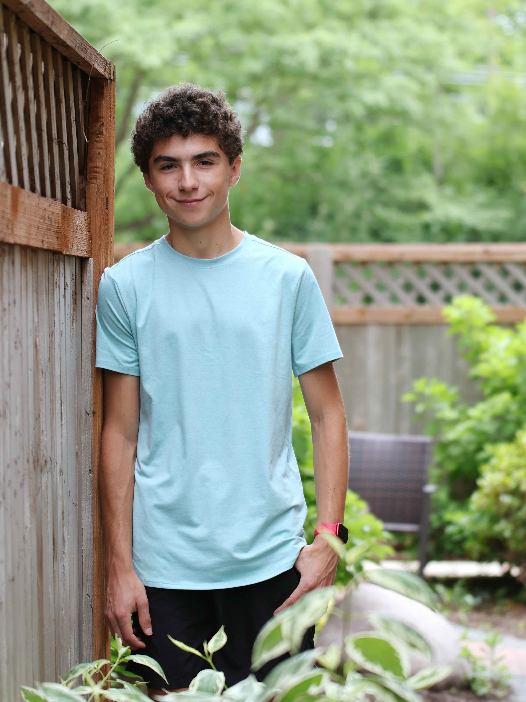

Lucas Raicu

I continually seek new challenges in academics, music, and sports, embracing every obstacle as an opportunity to grow stronger.
My name is Lucas Raicu, and I live in Glenview, Illinois. As a senior at Glenbrook South High School, I’m deeply passionate about music, sports, and academics. I play key roles in the soccer and tennis programs and serve as co–assistant concertmaster of the symphonic orchestra. Beyond school, I enjoy playing chess and ping-pong with friends, skiing in the winter, and experimenting with machine learning algorithms—like the one I hope will someday automate mowing my lawn (a project that actually began with trying to out-predict the National Oceanic and Atmospheric Administration’s coastal water level forecasts). I’m fueled by curiosity and a drive to keep learning—whether through classes, projects, or everyday experiences. Each day, I aim to become a better version of myself. Feel free to explore my website for a glimpse into my passions, projects, and life experiences.